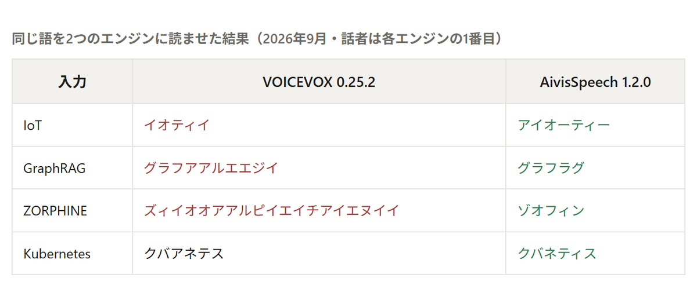
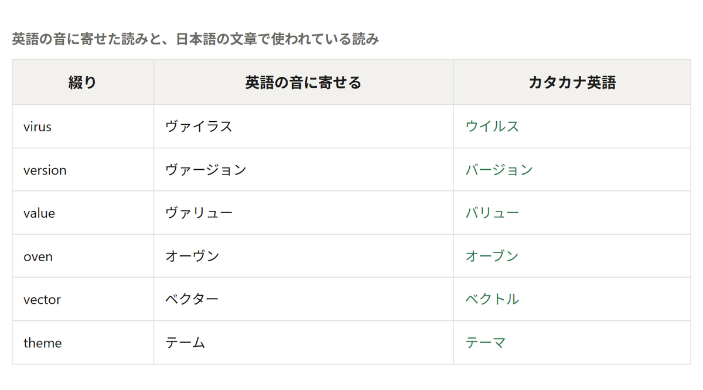
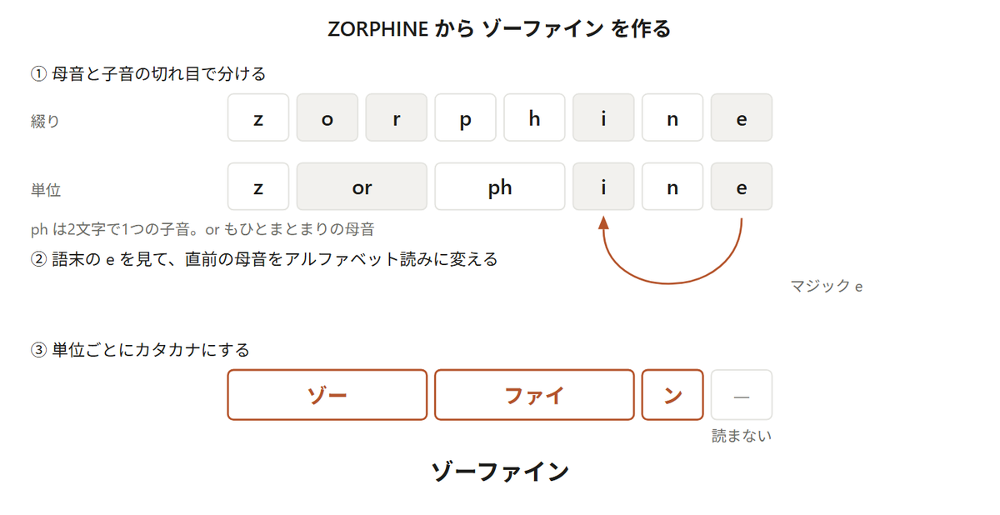
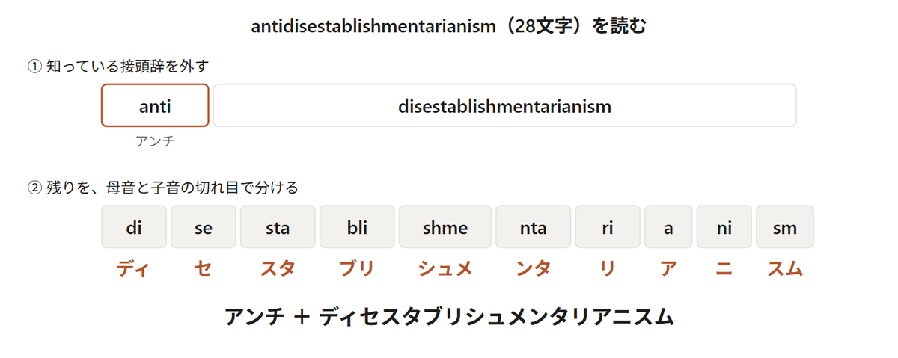
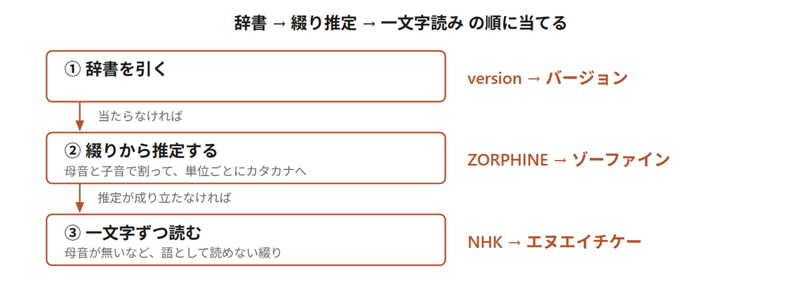
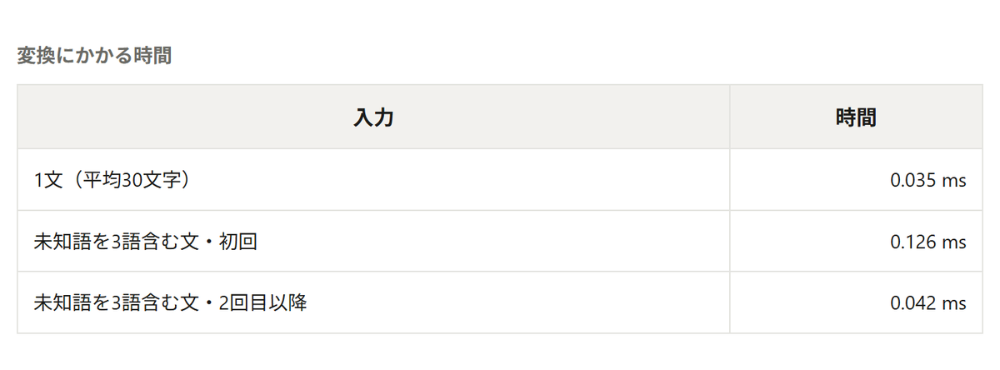
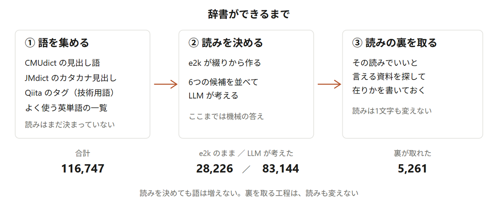
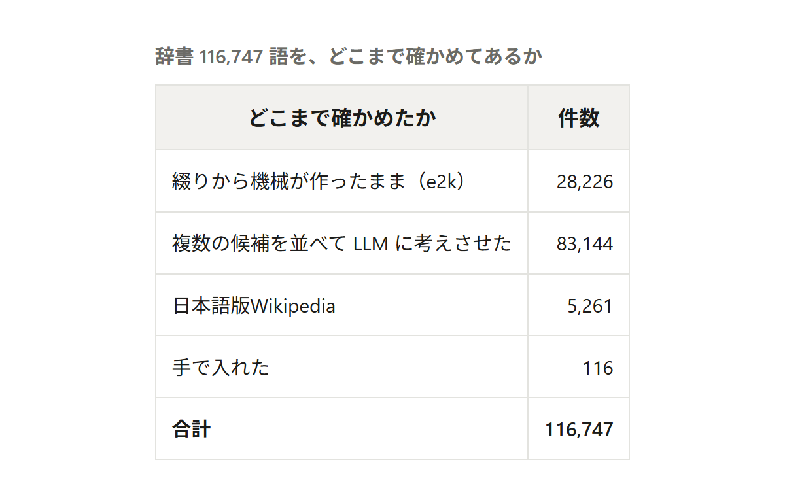

最近、とてもいい感じに日本語の音声を出力してくれるIrodori-TTS という音声合成モデルを気に入って使っています。
ただ、Irodori-TTSには英単語の読みがあまり得意ではないという弱点があります。英単語をカタカナにする機能がそもそもありません。アルファベットはそのままモデルに入り、どう読まれるかはモデル任せになります。
入力 Kubernetes上のnginxをTerraformで立てる。GraphRAGの話もします。 音 クーバネテス上のいんでぃげーすをティファるふぁるでたてる。ぐらふらじ〜の話もします
ほかのエンジンはどうなのか、VOICEVOX と AivisSpeech という日本語専用のエンジンを手元に落として比べてみました。
VOICEVOX 0.25.2 に「GraphRAGの話」と入れると、「グラフアアルエエジイノハナシ」と読まれました。Graph は読めていて、RAG だけを R、A、G と読み上げています。架空のサービス名として ZORPHINE を入れると、今度は丸ごと「ズィイオオアアルピイエイチアイエヌイイ」でした。

AivisSpeech 1.2.0 には、綴りをカタカナにする機能があるようです。 kanalizer という変換器を同梱してるようです。
では英単語を自然に読める AivisSpeech を使えばいいのか？というと、やっぱり自分には AivisSpeech より Irodori-TTS の方を使いたいんです！
それに、自然な会話をTTSで楽しむなら全体的なレスポンス時間を詰める必要があるため、数ms〜数十msでも削りたいというのが正直なところです。
AivisSpeechは語ごとにkanalizerを使用するので、英単語が増えれば、その数だけ時間が積み上がります。kanalizer を単体で測ると、1語あたり 4.3ms（15語を20回ずつ、中央値。最小 3.2ms、最大 5.5ms）。1文に3語あれば 13ms、6語なら 26ms です。
そこで、TTS に渡す前に英単語をカタカナへ直す API を作りました。kataAPI です。
ここで言う「日本人が読むように」とは、英語の発音に近づけることとは違います。kataAPIが返すのは英語発音の忠実な転写ではなく、日本語の文章の中で自然に読めるカタカナです。たとえば次のような違いがあります。

真ん中の列は kanalizer の出力です。
合成音声に「このヴァージョンのヴァイラス対策」と読ませると、「なんだ？お前は急に！」となるでしょう。欲しいのは、日本語の文章に混ざったときに引っかからない読みのほうです。
右の列は、綴りからは単純に出てこない、日本独自のカタカナ読みです。どんな規則を書いても virus は「ウイルス」になりませんし、theme も「テーマ」になりません。この辺が英単語のめんどくさいところですよね。
そのうえで、辞書に載っていない綴りも読めるようにしたいです。
ZORPHINE → ゾーファイン antidisestablishmentarianism → アンチディセスタブリシュメンタリアニスム GraphRAG → グラフラグ
この3語は、どれも辞書ではなく、人間のように綴りだけを見て読みを作っています。
読みの作り方は、日本人が英語を読むときのクセをなぞっています。 ZORPHINE を例に、中でどのような処理をしているか見てみます。

語末に e があるとき、i の読みが「イ」から「アイ」に変わります。その e 自体は読みません。
長い語も、やることは変わりません。先に知っている接頭辞を外して、残りを同じ規則にかけます。

28文字が10個の単位に割れます。1つずつカタカナに直して繋ぐだけなので、語が長くなっても手順は増えません。
1語の読みは、辞書引き・綴り推定・一文字読みを、この順に当てて決めています。当たったところで確定し、当たらなければ次を試します。

冒頭で見た VOICEVOX の読みは、一文字読みが語全体へ出ていた状態です。一文字読みは最後の手段で、まずは辞書引きと綴り推定で処理します。
辞書引きには Aho-Corasick を使っています。11万語ぶんの検索木をあらかじめ組んでおいて、入力を頭から1回なぞるだけで、当てはまる語を全部拾う方法です。1語ずつ照合しにいかないので、辞書件数に比例して全語を照合する必要はなく、検索は基本的に入力長に対して線形です
綴り推定のほうは、接頭辞 24 種類、語尾 9 種類、母音のまとまり 39 種類、2文字で1音になる子音 14 種類といった表を順に当てて、そのうえで促音やマジック e の規則をかけます。
そのぶん時間がかかり、未知語を3語含む文は初回で 0.126ms でした。辞書だけで読める平均30文字の文（0.035ms）の3倍強です。
高速化のために同じ綴りが二度目に出てきたときは、綴り推定をやり直す必要がないように、一度決めた読みを控えておいて、次からはそれを参照できるようにしました。
母音が1つも無い綴りや、英語に出てこない子音の並びは、単語として読めません。ここまで来た綴りは、一文字ずつ読みます。
HTML → エイチティーエムエル 母音が1つも無い OECD → オーイーシーディー cd が並ぶ語は英語に無い NHK → エヌエイチケー 母音が1つも無い
ここは3文字以下には使えません。 RAM（ラム）と LED（エルイーディー）は、どちらも子音・母音・子音で、綴りの上で区別が付かないからです。短い略語は、辞書で1語ずつ持っています。

11万語を集めました。語を連れてくるのと読みを決めるのは別の作業で、手間がかかったのは後者のほうです。


上から順に説明します。
まず「どんな英単語が世の中にあるか」の一覧が要ります。今回はCMUdict の力を借りました。カーネギーメロン大学が公開している英語の発音辞書で、13万語ほどの英単語に、その語をどう発音するかが書いてあります。
docker D AA1 K ER0 java JH AA1 V AH0 python P AY1 TH AA0 N water W AO1 T ER0
左が見出しの単語、右がその発音です。ここで用があるのは一番左の見出し語だけで、発音記号のほうは捨てています。
その見出し語を1語ずつ e2k に入れて、カタカナの読みを受け取りました。e2k は綴りを入れるとカタカナを返す小さなモデルで、AivisSpeech が使う kanalizer と同じ仕事をします。
docker → ドッカー java → ジャバ virus → ウイルス banana → バナナ
e2k は1語に 36ms かかるので、リクエストのたびには回せません。ビルドのときに1回だけ通して、出てきた読みを辞書に持っておきます。
綴り推定と同じ読みになる語は、辞書に入れていません。同じ答えなら実行時に作れるからです。この基準で2万6千語あまりが辞書の外に出ました。
機械が作った読みには、間違っているものが混ざります。どれが間違っているかは、機械には分かりません。どんな綴りを入れても規則は必ず何か返すので、出てきたカタカナを見ても判定できません。
violin → ビオリン （バイオリン） McDonald → ムクドナルド （マクドナルド）
そこで、1つの綴りに6つの候補を並べました。
いまの辞書 ／ 綴り推定 ／ e2k（綴りから） ／ e2k（音素から） ／ kanalizer ／ JMdict
JMdict は和英辞典のデータで、カタカナの見出しに英語の語釈が付いています。
ウイルス virus; germ ゴール goal; finish line
辞書を逆から引けば、英語の語釈からカタカナの見出しが候補として集まります。
この6つを並べて、gpt5.6-sol と gpt5.6-luna に「日本語として自然な読み方」を考えさせます。
great 候補 グリート / オオカンガルー（？） / グラン / グレイト → グレート btc 候補 ブトク / ブッ / ブック / ビットコイン → ビーティーシー
6つの候補を並べて考えさせた結果、37,727 綴りの読みが変わりました。comb がコンブ、dawn がダウンだったのも、ここで直っています。
中学高校レベルの英単語も、以下のように直りました。
this シス → ディス said サイード → セッド could カルド → クッド take タケ → テイク learn リアン → ラーン want ワント → ウォント they テイ → ゼイ their ター → ゼア where ホワー → ウェア many マニー → メニー
技術用語と新語 353語
ここまでの語は、いかにも英単語というのが中心でした。Firebase や Terraform は、辞書に載っていません。
どの語を拾うかは Qiita のタグに付いている記事数で決めました。タグを 3,000 件取ってきて、記事数の多い順に上から見ています。
Python 105,364本 JavaScript 65,863本 AWS 59,295本
この順で見ていくと、技術用語と新しいサービス名が先に来ます。よく書かれている語ほど、読み間違いが人の耳に触れる回数も多いはずです。読みがどこにも無かった 353 語は、LLM に一から書かせました。
AUTOSAR → オートザー AppSync → アップシンク ActiveDirectory → アクティブディレクトリ Agora.io → アゴラドットアイオー
ここまでは、どれも機械が決めた読みです。正しいと言える材料が、どこにもありません。
そこで、日本語版 Wikipedia を使いました。日本語版の記事は、冒頭の1文が「見出し語（カタカナ）」の形で始まります。
nginx（「エンジンエックス」）は、フリーでオープンソースなWebサーバアプリケーションである。 Vim（ヴィム。「ヴィアイエム」という読み方は誤り）は、vi から派生し、 発展した高機能なテキストエディタである。
綴りをそのまま記事名にして引き、最初の1文の丸括弧にあるカタカナが辞書の読みと一致したら、その記事を出典として書き添えました。
CMUdict から見出し語を選ぶとき、4文字以上に絞ってしまっていたため、以下のような簡単な単語に対応できていませんでした。
of → オフ be → ベ as → アス by → ビー we → ウェ no → ノ
英単語の使用頻度表（wordfreq）の上位3万語を引いて、ここまでの辞書に行が無い 3,459 綴りを選び直しました。うち 2,319 綴りは綴り推定と同じ読みになったので、入れたのは残りの 1,102 綴りです。
実際に変換できるようになった例をいくつか挙げます。
Kubernetes上のnginxをTerraformで立てる → クーベネティス上のエンジンエックスをテラフォームで立てる Claude CodeでGraphRAGを実装した → クロードコードでグラフラグを実装した
nginx の読みは エンジンエックス だそうです。私は知りませんでした。
iPhone → アイフォン macOS → マックオーエス VSCode → ブイエスコード Log4j → ログフォージェイ
小文字から大文字に変わるところを、語の切れ目として扱っています。VSCode は VS と Code に割れるので、略語の部分だけを一文字ずつ読みます。
C++ → シープラスプラス C# → シーシャープ .NET → ドットネット Node.js → ノードジェイエス
記号のまま渡すと TTS に無視されるので、ここでカタカナに変えておきます。
iPhone 15 Proのバッテリーは3000mAhです → アイフォン15プロのバッテリーは3000ミリアンペアアワーです
数字の直後に来る mAh を単位として読みます。数字そのものはカタカナにしません。TTS が読めるからです。
詳しくは https://example.com/docs を見てください → 詳しくは イグザンプルドットコム を見てください
URL は全部読み上げると長くなるので、ドメインだけ残しています。
esbuild → エスブイルド （エスビルド） rollup → ロラップ （ロールアップ） minute → ミニッツ （ミニット。minutes の読みが単数形に付いた） tickets → チケット （チケッツ。複数形の s が消えた）
単数形・複数形のうち、日本人に親しみの深いほうの読みが付いているようです。
いちばん見落としやすかったのが、このケースです。of の候補は、こう並んでいました（辞書にも JMdict にも of の行が無いので、6つのうち4つしか埋まりません）。
綴り推定 オフ e2k（綴りから） オフ kanalizer オフ e2k（音素から） オーブ → LLM の答え「オフ」（自信 0.95）
こんな基本的な単語ですら最後までチェックからすり抜けていました。4つのうち3つが オフ で一致していて、LLM もそれを追認しました。人が目で見る表には「LLM の答えが駄目なものだけ書く」列を作ってあったので、追認された間違いは、そもそも列に現れません。
候補がそろうのは、4つの経路が同じ綴りを同じように読んだという意味でしかありませんでした。of と or は、最後に手で オブ・オア へ直しています。
英語には、同じ綴りで読みが変わる語があります。kataAPI は綴りしか見ないので、どちらか一方しか返せません。
read the doc → リードザドック I read it yesterday → アイリード…… （レッド のはず） live streaming → ライブストリーミング I live here → アイライブヒア （リブ のはず）
前後の語を見て品詞を判定すれば分かる場合もありますが、そこには手を付けていません。形態素解析を1つ挟むことになり、速さが犠牲になってしまうからです。ただ、kataAPI は基本的に日本語の文章を想定していて、上のような英文が混ざることはめったにないので、恐らく問題ないと思っています。
Java入門 のような語は、変換そのものは可能です。
Java入門 → ジャバ入門 if文 → イフ文
英字の並びだけを切り出して、そこを読んでいるからです。
ただし「Java入門」という1つの見出しで辞書に登録することはできませんし、TTSモデルへのとしては「ジャバ入門」となってしまい、出力の不自然さには多少なりとも影響するでしょう。
略語の判定を広げたとき、usada がユーエスエーディーエーと読まれるようになりました。英字の並びとしては略語の形をしているので、規則からは区別が付きません。
ところがこれは「うさだ」という日本語の名前でもあります。そちらの読みがおかしくなるほうが困るので、判定を広げるのをやめました。いまは アサダ と読みます。これも正しくはありませんが、名前が一文字ずつ読み上げられるよりはましだ、という線で止めてあります。
今後ぜひ対応したいのが新語です。新しい会社名やサービス名は毎週出てきます。1語ずつ確かめていく方法だと、追いつきません。
辞書に無くても綴りから読みは作れます。ただ、最初は読み方が定まっておらず、後から公式の読みが発表される語もあります。
たとえば Dify（ディファイかと思ってたら、いつの間にか公式がディフィーで統一し始めた）とか、Gemini（ジェミニかジェミナイか覚えられない……と思ってたら英語ではジェミナイ。日本語では公式でもジェミニでいいらしい）がそうです。
記事に出てきた辞書・モデル・サービスの出どころです。CMUdict・kanalizer・JMdict は表示義務があります。JMdict だけ継承の条件が付くので、それを使った行は1ファイルに分けてあります。